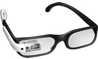

Google Glass
A revolução do Google está chegando

Menu Principal
-Home
-Especificações
-Fotos
-Multimídia
-Fale conosco
Tecnologia > Inovações
Saiba tudo sobre o Google Glass
por Gustavo Guanabara
Atualizado em 23/Abril/2013
O que é
O Google Glass é um acessório em forma de óculos que possibilita a interação dos usuários com diversos conteúdos em realidade aumentada
[AQUI ENTRA UMA FOTO]
Data de lançamento
Não há uma data específica e oficial para o dispositivo ser lançado, ainda. Pode ser que ele esteja disponível em demonstrações a partir de 2013, mas seu lançamento para as lojas fica para, pelo menos, 2014.
Especificações Técnicas
Tabela Técnica do Google Glass
Tela:Resolução equivalente a tela de 25"
Camera: 5MP para fotos / 720p para vídeos
Conectividade: Wi-Fi/ Bluetooth
Memória Interna: 12GB
Como funciona
De acordo com fontes próximas do Google, os óculos vão contar com uma pequena tela de LCD ou AMOLED na parte superior e em frente aos olhos do usuário. Com o uso de uma câmera e GPS, você pode se situar, assim como selecionar opções com o movimento da cabeça.